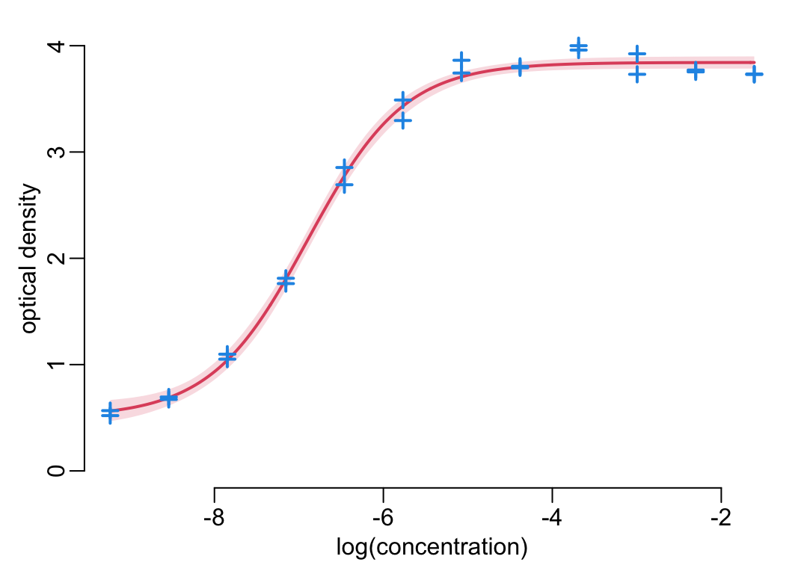
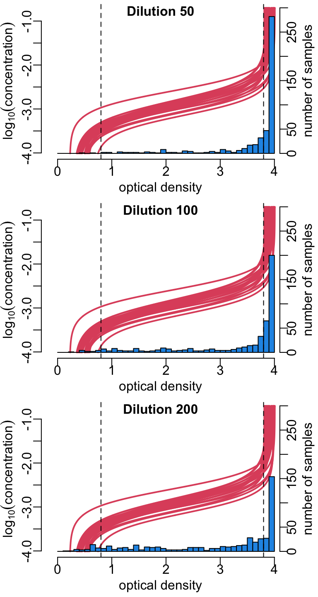
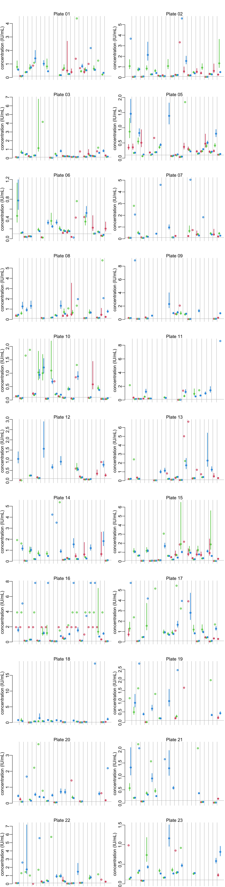
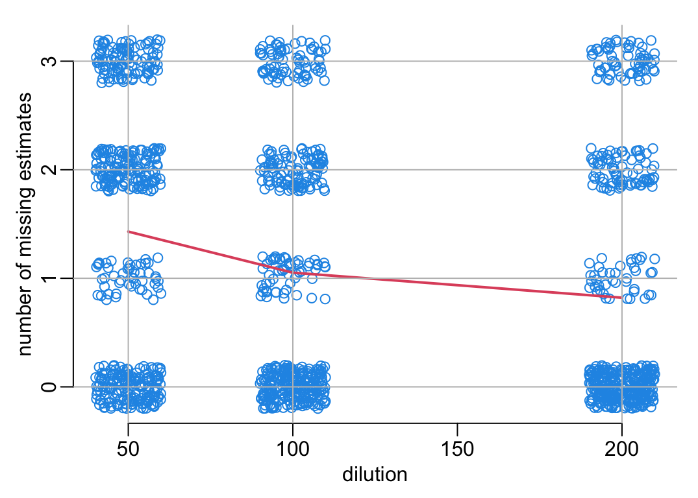

ref_conc <- 10Processing tetanus ELISA data
1 Parameters
The concentration of the reference anti-toxin is 10 IU/mL:
The path to the data:
path2data <- paste0(Sys.getenv("HOME"), "/Library/CloudStorage/",
"OneDrive-OxfordUniversityClinicalResearchUnit/",
"GitHub/choisy/tetanus/")The name of the data file:
datafile <- "Tetanus_Dr. Thinh_HCDC samples.xlsx"2 Packages
Required packages:
required_packages <- c("dplyr", "tibble", "readxl", "purrr", "stringr", "mvtnorm")Installing those that are not installed:
to_inst <- required_packages[! required_packages %in% installed.packages()[,"Package"]]
if (length(to_inst)) install.packages(to_inst)Loading some for interactive use:
library(dplyr)
library(purrr)
library(stringr)3 General functions
Tuning some base functions:
lwd_val <- 2
color_data <- 4
color_model <- 2
make_path <- function(file) paste0(path2data, file)
read_excel2 <- function(file, ...) readxl::read_excel(make_path(file), ...)
excel_sheets2 <- function(file) readxl::excel_sheets(make_path(file))
plot2 <- function(...) plot(..., col = color_data)
seq2 <- function(...) seq(..., le = 512)
plotl <- function(...) plot(..., type = "l", col = color_model, lwd = lwd_val)
points2 <- function(...) points(..., col = color_data, pch = 3, lwd = lwd_val)
lines2 <- function(...) lines(..., col = color_model, lwd = lwd_val)
print_all <- function(x) print(x, n = nrow(x))
approx2 <- function(...) approx(..., ties = "ordered")
polygon2 <- function(x, y1, y2, ...) {
polygon(c(x, rev(x)), c(y1, rev(y2)), border = NA, ...)
}A function that draws the frame of a plot:
plot_frame <- function(...) {
plot(..., type = "n", xlab = "log(concentration)", ylab = "optical density")
}A function that splits the rows of a dataframe into a list of dataframes:
rowsplit <- function(df) split(df, 1:nrow(df))A function that simulates data from an nls object:
simulate_nls <- function(object, newdata, nb = 9999) {
nb |>
mvtnorm::rmvnorm(coef(object), vcov(object)) |>
as.data.frame() |>
rowsplit() |>
map(as.list) |>
map(~ c(.x, newdata)) |>
map_dfc(eval, expr = parse(text = as.character(formula(object))[3]))
}Functions for multipanel plots:
mcx <- 3 / 2
par_mfrow <- function(mfrow) {
par(mfrow = mfrow, mex = mcx, cex.axis = mcx, cex.lab = mcx, cex.main = mcx)
}4 Preparing the data
A function that removes the plate slot(s) that do(es) not contain any data:
remove_empty_plates <- function(x) x[map_lgl(x, ~ ! all(is.na(.x$RESULT)))]A function that adds the sample ID whenever missing:
add_sample_id <- function(x) {
id <- x$HCDC_SAMPLE_ID
x$HCDC_SAMPLE_ID <- grep("Anti", id, value = TRUE, invert = TRUE) |>
na.exclude() |>
unique() |>
rep(each = 3) |>
c(grep("Anti", id, value = TRUE))
x
}Reading and arranging the data:
plates <- datafile |>
excel_sheets2() |>
(\(.x) .x[grepl("Plate", .x)])() |>
(\(.x) setNames(map(.x, read_excel2, file = datafile), .x))() |>
map(~ setNames(.x, toupper(names(.x)))) |>
remove_empty_plates() |>
map(add_sample_id)5 Specific functions
A 4-parameter logistic model that relates optical density \(\mbox{OD}\) to the logarithm of the concentration \(\mbox{LC}\):
\[ \mbox{OD} = d + \frac{a - d}{1 + e^{\left(\mbox{LC} - c\right)b}} \]
where:
- \(a\) is the minimum \(\mbox{OD}\), i.e. when the concentration is \(0\);
- \(d\) is the maximum \(\mbox{OD}\), i.e. when the concentration is \(+\infty\);
- \(c\) is the \(\mbox{LC}\) of the point of inflexion, i.e. where \(\mbox{OD} = (d - a) / 2\);
- \(b\) is the Hill’s slope of the curve, i.e. the slope of the curve at the inflexion point.
Two functions that implement the calibration of a 4PL model:
good_guess4PL <- function(x, y, eps = 1) {
nb_rep <- unique(table(x))
the_order <- order(x)
x <- x[the_order]
y <- y[the_order]
a <- min(y)
d <- max(y)
c <- approx2(y, x, (d - a) / 2)$y
list(a = a,
b = (approx2(x, y, c + eps)$y - approx2(x, y, c - eps)$y) / (2 * eps),
c = c, d = d)
}
nls4PL <- function(df) {
nls(RESULT ~ d + (a - d) / (1 + exp((log(concentration) - c) * b)),
df, with(df, good_guess4PL(log(concentration), RESULT)))
}A function that generates the standard curve with confidence interval in the form of a dataframe:
standard_curve_data <- function(df, model, le = 512, level = .95, nb = 9999) {
log_concentration <- log(df$concentration)
logc <- seq(min(log_concentration), max(log_concentration), le = le)
alpha <- (1 - level) / 2
df |>
model() |>
simulate_nls(list(concentration = exp(logc)), nb) |>
apply(1, quantile, c(alpha, .5, 1 - alpha)) |>
t() |> as.data.frame() |>
setNames(c("lower", "median", "upper")) |>
(\(.x) bind_cols(logc = logc, .x))()
}A function that plots the output of standard_curve_data() with or without data:
plot_standard_curve <- function(scdf, data = NULL, ylim = NULL) {
with(scdf, {
if (is.null(ylim)) ylim <- c(0, max(upper, data$RESULT))
plot_frame(logc, scdf$lower, ylim = ylim)
polygon2(logc, lower, upper, col = adjustcolor(color_model, .2))
lines2(logc, median)
})
if (! is.null(data)) with(data, points2(log(concentration), RESULT))
}A function that converts a dataframe into a function:
data2function <- function(df) {
with(df, {
make_pred_function <- function(data) approxfun(data, logc)
pred_lwr <- make_pred_function(upper)
pred_mdi <- make_pred_function(median)
pred_upp <- make_pred_function(lower)
function(x) c(lower = pred_lwr(x), median = pred_mdi(x), upper = pred_upp(x))
})
}A function that retrieves the anti-toxins data from a plate:
get_antitoxins <- function(plate) {
plate |>
filter(HCDC_SAMPLE_ID == "Anti_toxin") |>
mutate(concentration = ref_conc / DILUTION_FACTORS)
}A function that retrieves the samples data from a plate and computes the log-concentrations:
process_samples <- function(plate, std_crv) {
plate |>
filter(HCDC_SAMPLE_ID != "Anti_toxin") |>
rowwise() |>
mutate(logconcentration = list(std_crv(RESULT))) |>
tidyr::unnest_wider(logconcentration)
}An example on the first plate:
plate <- plates$Plate_01_hcdcThe 4 steps:
# step 1: retrieve the anti-toxins data:
anti_toxins <- get_antitoxins(plate)
# step 2: generate the standard curve with CI in the form of a dataframe:
standard_curve_df <- standard_curve_data(anti_toxins, nls4PL)
# step 3: convert the standard curve dataframe into a standard curve function:
standard_curve <- data2function(standard_curve_df)
# step 4: convert the OD of the samples into log-concentrations:
samples <- process_samples(plate, standard_curve)The plots of the standard curve, with and without data:
plot_standard_curve(standard_curve_df)plot_standard_curve(standard_curve_df, anti_toxins)
6 Processing all the plates
6.1 The standard curves
The four steps applied to all the plates:
anti_toxins <- map(plates, get_antitoxins)
standard_curve_df <- map(anti_toxins, standard_curve_data, nls4PL)
standard_curves <- map(standard_curve_df, data2function)
samples <- map2(plates, standard_curves, process_samples)Showing all the standard curves together:
xs <- map(standard_curve_df, ~ .x$logc)
ys <- map(standard_curve_df, ~ .x$median)
plot_frame(unlist(xs), unlist(ys))
walk2(xs, ys, lines2)
abline(v = log(.1 / c(1, 50, 100, 200)), lwd = lwd_val, col = color_data)Showing the standard curves and data points, plate by plate:
titles <- anti_toxins |>
names() |>
str_remove("_hcdc") |>
str_replace("_", " ")
opar <- par_mfrow(c(8, 3))
walk(seq_along(anti_toxins), function(i) {
plot_standard_curve(standard_curve_df[[i]], anti_toxins[[i]], ylim = c(- .2, 4))
mtext(titles[i], line = -4, at = -4)
})
par(opar)Showing the distributions of the ODs for the 3 dilutions, across the plates, together with the standard curves:
dilutions_factors <- c(50, 100, 200)
dilutions <- map_dfc(dilutions_factors,
function(x) map(samples, ~ .x |>
filter(DILUTION_FACTORS == x) |>
pull(RESULT)) |> unlist())
xlim <- c(-.3, 4.1)
hist2 <- function(x, y, ...) {
plot_frame
plot(unlist(ys), unlist(xs), type = "n", xaxs = "i", xlim = xlim,
xlab = "optical density", ylab = "log(concentration)")
walk2(ys, xs, lines2)
par(new = TRUE)
hist(x, breaks = seq(0, 4, .1), col = color_data, xaxs = "i",
axes = FALSE, ann = FALSE, xlim = xlim, ylim = c(0, 300), , ...)
axis(4); mtext("number of samples", 4, 1.5)
abline(v = c(.8, 3.8), lty = 2)
mtext(y, 3, -1, font = 2)
}
opar <- par_mfrow(c(3, 1))
walk2(dilutions, paste("Dilution", dilutions_factors), hist2)par(opar)6.2 The concentrations estimates
Plotting the concentration estimates per plates and dilution for all the samples:
plot_concentrations <- function(x) {
nb_replicates <- unique(table(x$HCDC_SAMPLE_ID))
nb <- nrow(x)
colors <- rep(2:4, nb / nb_replicates)
tmp <- (1:(nb + nb / nb_replicates - 1))
vertical_lines <- seq(nb_replicates + 1,
tail(tmp, nb_replicates + 1)[1],
nb_replicates + 1)
xs <- tmp[-vertical_lines]
x |>
mutate(across(c(lower, median, upper), ~ exp(.x) * DILUTION_FACTORS)) |>
with({
plot(xs, median, col = colors, lwd = lwd_val,
ylim = c(0, max(median, upper, na.rm = TRUE)),
axes = FALSE, xlab = NA, ylab = "concentration (IU/mL)")
axis(2)
segments(xs, lower, xs, upper, col = colors, lwd = lwd_val)
})
abline(v = vertical_lines, col = "grey")
}
opar <- par_mfrow(c(11, 2))
walk2(samples, titles, ~ {plot_concentrations(.x); mtext(.y)})
par(opar)6.3 Looking at the dilutions
Showing where estimates are possible (in green). When they are not possible, it’s either because the concentration is too high (in red), or because the concentration is too low (in orange). Each of the 22 columns represents a plate and each of the 22 rows with each column represents a sample. Within each sample, the 3 columns are for the point estimates of the concentrations (middle) with 95% confidence interval (lower and upper bounds in the left and right columns respectively) and the 3 rows are for the 3 dilutions values (50, 100 and 200 from top to bottom):
# function to add missing values if there are less than 22 samples in a plate:
nb_smpls <- 22 # number of samples per plate
nb_dltns <- 3 # number of dilutions per sample
nb_estmts <- 3 # number of estimates per dilution (point + confidence interval)
template <- matrix(rep(NA, nb_smpls * nb_dltns * nb_estmts), nrow = nb_estmts)
format_mat <- function(x) {
template[, 1:ncol(x)] <- x
template
}
# the function that draws the heatmap for 1 plate:
abline2 <- function(...) abline(..., col = "white")
plot_heatmap <- function(x) {
x |>
mutate(across(c(lower, median, upper),
~ as.numeric(is.na(.x)) * ((RESULT > 2) + 1))) |>
select(lower, median, upper) |>
as.matrix() |>
t() |>
format_mat() |>
(\(.x) .x[, rev(seq(ncol(.x)))])() |>
(\(.x) image(1:nb_estmts, 1:(nb_smpls * nb_dltns), .x,
axes = FALSE, ann = FALSE, col = c(3, 7, 2)))()
abline2(v = c(1.5, 2.5))
abline2(h = seq(nb_dltns, nb_dltns * nb_smpls, nb_dltns) + .5)
# axis(2, seq(mean(seq(nb_dltns)), nb_dltns * nb_smpls, nb_dltns), nb_smpls:1)
# box(bty = "o")
}
opar <- par(mfrow = c(1, 22))
walk(samples, plot_heatmap)
par(opar)Number of samples for which a concentration can be estimated:
nb_NA <- samples |>
bind_rows() |>
mutate(total = is.na(lower) + is.na(median) + is.na(upper))
# with full confidence interval:
nb_NA |>
group_by(HCDC_SAMPLE_ID) |>
summarise(OK = any(total < 1)) |>
pull(OK) |>
sum()[1] 340# with partial confidence interval:
nb_NA |>
group_by(HCDC_SAMPLE_ID) |>
summarise(OK = any(total < 2)) |>
pull(OK) |>
sum()[1] 388Out of 481 samples,
- there are 2 sample (0.4 %) for which a dilution of 50 is already too much in order to estimate the lower bound of its 95% confidence interval;
- there are 340 samples (70.6 %) for which the concentration can be estimated with a 95% confidence interval.
- and an additional 48 samples (10.0 %) for which the concentration can be estimated with a partial 95% confidence interval.
Let’s look at the optimal dilution for each sample:
optimal_dilutions <- samples |>
bind_rows() |>
select(HCDC_SAMPLE_ID, DILUTION_FACTORS, RESULT, lower, median, upper) |>
mutate(across(c(lower, median, upper), exp),
ci_range = upper - lower) |>
group_by(HCDC_SAMPLE_ID) |>
filter(ci_range == min(ci_range, na.rm = TRUE)) |>
ungroup() |>
pull(DILUTION_FACTORS) |>
table()
optimal_dilutions
50 100 200
30 33 277 round(100 * optimal_dilutions / 340, 1)
50 100 200
8.8 9.7 81.5 Meaning that, out of the 340 samples for which an estimate with confidence interval can be generate, 29 (8.5%) have an optimal dilution of 50, 33 (9.7%) have an optimal dilution of 100 and 278 (81.8%) have an optimal dilution of 200.
The number of missing estimates (point or any of tbe bounds of the confidence interval) as a function of the dilution:
# A function that adds axes and grid:
add_grid <- function() {
axis(1); axis(2, 0:3)
abline(h = 0:3, col = "grey")
abline(v = c(50, 100, 200), col = "grey")
}
plot3 <- function(...) {
plot2(..., axes = FALSE, xlab = "dilution", ylab = "number of missing estimates")
}
# Preparing the data:
nb_missing <- nb_NA |>
group_by(DILUTION_FACTORS, total) |>
tally() |>
ungroup()
mean_nb_missing <- nb_missing |>
group_by(DILUTION_FACTORS) |>
mutate(mean = sum(total * n) / sum(n)) |>
ungroup() |>
select(- total, - n) |>
unique()
# The plot:
with(nb_NA, plot3(jitter(DILUTION_FACTORS), jitter(total)))
with(mean_nb_missing, lines(DILUTION_FACTORS, mean, lwd = 2, col = 2))
add_grid()
An alternative plot:
with(nb_missing, plot3(DILUTION_FACTORS, total, cex = sqrt(n) / sqrt(min(n)), pch = 19,
xlim = c(45, 205), ylim = c(-.2, 3.3)))
with(mean_nb_missing, lines(DILUTION_FACTORS, mean, lwd = 2, col = 2))
add_grid()7 Negative controls
A function that retrieves the negative controls from 1 plate:
get_negatives_controls <- function(x) {
x |>
select(starts_with("NEGATIVE")) |>
unique() |>
tidyr::pivot_longer(everything(), names_to = "dilution", values_to = "od") |>
mutate(across(dilution, ~ stringr::str_remove(.x, "NEGATIVE_") |> as.integer()))
}Retrieving all the negative controls of all the plates and computing the concentrations:
neg_contr <- plates |>
map_dfr(get_negatives_controls, .id = "plate") |>
rowwise() |>
mutate(concentration = list(exp(standard_curve(od)))) |>
tidyr::unnest_wider(concentration) |>
mutate(across(c(lower, median, upper), ~ .x * dilution),
ci_range = upper - lower,
thresh0_01 = upper < .01,
thresh0_10 = upper < .1)Selecting the best dilution for each sample and checking that the negative control are identified as negative:
neg_contr |>
group_by(plate) |>
filter(ci_range == min(ci_range, na.rm = TRUE)) |>
ungroup() |>
print_all()# A tibble: 22 × 9
plate dilution od lower median upper ci_range thresh0_01 thresh0_10
<chr> <int> <dbl> <dbl> <dbl> <dbl> <dbl> <lgl> <lgl>
1 Plate_01_… 50 1.74 0.0346 0.0372 0.0399 0.00536 FALSE TRUE
2 Plate_02_… 50 1.45 0.0273 0.0297 0.0322 0.00494 FALSE TRUE
3 Plate_03_… 50 2.39 0.0552 0.0588 0.0627 0.00745 FALSE TRUE
4 Plate_05_… 50 1.84 0.0375 0.0402 0.0431 0.00555 FALSE TRUE
5 Plate_06_… 50 1.72 0.0342 0.0368 0.0395 0.00533 FALSE TRUE
6 Plate_07_… 100 1.24 0.0443 0.0490 0.0535 0.00919 FALSE TRUE
7 Plate_08_… 50 1.27 0.0228 0.0252 0.0275 0.00465 FALSE TRUE
8 Plate_09_… 50 1.69 0.0333 0.0359 0.0386 0.00530 FALSE TRUE
9 Plate_10_… 50 1.58 0.0304 0.0329 0.0355 0.00515 FALSE TRUE
10 Plate_11_… 50 1.26 0.0225 0.0249 0.0272 0.00463 FALSE TRUE
11 Plate_12_… 50 0.837 0.0120 0.0142 0.0162 0.00417 FALSE TRUE
12 Plate_13_… 50 0.866 0.0129 0.0150 0.0169 0.00409 FALSE TRUE
13 Plate_14_… 50 1.33 0.0243 0.0267 0.0291 0.00474 FALSE TRUE
14 Plate_15_… 50 0.826 0.0117 0.0139 0.0159 0.00420 FALSE TRUE
15 Plate_16_… 50 0.961 0.0154 0.0175 0.0195 0.00407 FALSE TRUE
16 Plate_17_… 50 1.04 0.0174 0.0195 0.0216 0.00421 FALSE TRUE
17 Plate_18_… 50 1.62 0.0315 0.0340 0.0367 0.00522 FALSE TRUE
18 Plate_19_… 50 1.83 0.0371 0.0398 0.0426 0.00552 FALSE TRUE
19 Plate_20_… 50 1.36 0.0251 0.0275 0.0299 0.00479 FALSE TRUE
20 Plate_21_… 50 1.46 0.0274 0.0299 0.0324 0.00496 FALSE TRUE
21 Plate_22_… 50 0.847 0.0123 0.0145 0.0164 0.00414 FALSE TRUE
22 Plate_23_… 50 1.03 0.0172 0.0193 0.0213 0.00418 FALSE TRUE Looking at what happens with plate 7:
filter(neg_contr, plate == "Plate_07_hcdc")# A tibble: 3 × 9
plate dilution od lower median upper ci_range thresh0_01 thresh0_10
<chr> <int> <dbl> <dbl> <dbl> <dbl> <dbl> <lgl> <lgl>
1 Plate_07_h… 50 2.70 0.0689 0.0738 0.0793 0.0104 FALSE TRUE
2 Plate_07_h… 100 1.24 0.0443 0.0490 0.0535 0.00919 FALSE TRUE
3 Plate_07_h… 200 0.702 0.0274 0.0407 0.0495 0.0221 FALSE TRUE